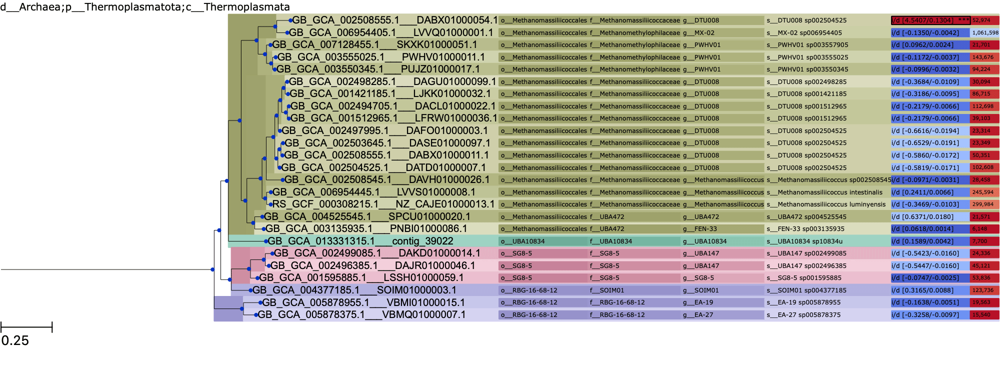
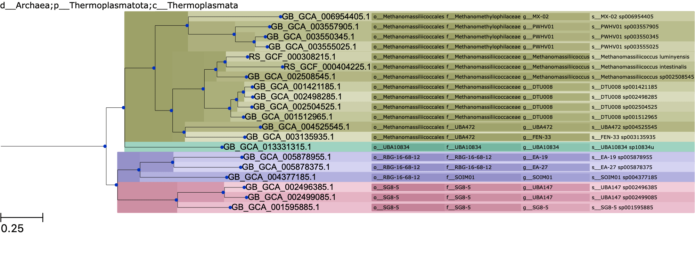
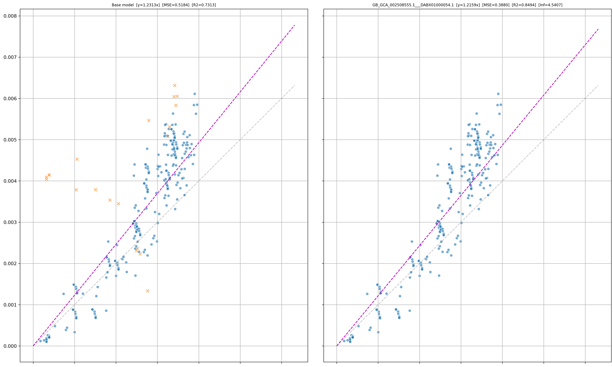

Example¶
Input¶
The files used in this example can be obtained from the example folder on the DeltaPD GitHub repository.
# Run DeltaPD on the example data (note, low value of k is for demonstration purposes)
deltapd --r_tree ar122_reference.tree --q_tree ar122_ssu_query.tree --metadata ar122_metadata_r95.tsv --msa_file ar122_ssu_r95.fna --influence_thresh 2 --diff_thresh 0.10 --out_dir /tmp/deltapd --k 20 --cpus 10 --plot
Output¶
DeltaPD will output two log files, two directories, and a HTML report:
report_datacontains HTML assets used only forreport.htmldeltapd_datacontains the raw data and images used in the HTML report.model.tsvcontained within each iteration contains the full information presented in the report.
HTML Report¶
The HTML report will contain each outlier identified in a table similar to the one below:
Outlier: GB_GCA_002508555.1___DABX01000054.1
Reference Taxon |
Iteration |
R2 Base |
R2 JK |
MSE Base |
MSE JK |
Grad Base |
Grad JK |
Influence |
Delta from base |
Plots |
|---|---|---|---|---|---|---|---|---|---|---|
GB_GCA_013331315.1 |
0 |
0.7313 |
0.8494 |
0.5184 |
0.388 |
1.2313 |
1.2159 |
4.5407 |
0.1304 |
QTree / RTree / PD |
GB_GCA_001595885.1 |
0 |
0.7445 |
0.855 |
0.5055 |
0.3807 |
1.2367 |
1.2201 |
4.4951 |
0.1247 |
QTree / RTree / PD |
Reference Taxon:
The query taxon (GB_GCA_002508555.1___DABX01000054.1) has appeared in the k=20 nearest neighbours for both reference taxa (GB_GCA_013331315.1, GB_GCA_001595885.1).
Iteration:
DeltaPD iteratively removes outliers until no outliers can be detected, this is to reduce the effect of masking (i.e. very high influence outliers will hide outliers with a smaller influence).
Base/JK Columns:
These are the respective metrics for the base set (i.e. all query and reference genomes for the k=20 set), and the jackknifed set (JK). The jackknife set effectively
measures the impact of removing the query taxon from the set.
Influence:
This is the relative influence of the query taxon on the k=20 set of taxa. Values higher than 2 should be considered outliers.
Delta from base:
This is the absolute difference between the mean squared error of the base and jackknife sets. This value can be used to threshold outliers, e.g.
outliers must cause at least a 0.1 difference in MSE.
Plots:
This contains plots for the query and reference trees (QTree, RTree) and the phylogenetic distance (PD). See below for more detail.
Plots¶
The following plots are those generated in the example above for reference taxon GB_GCA_013331315.1.
QTree¶
The columns pictured to the right of the plot are influence/delta (e.g. i/d [4.5407/1.304] respectively) and the contig length (e.g. 52,974).
Taxa that are identified as outliers in these plots will be marked with three asterisks. Note that the influence value is considered to be absolute when determining if it exceeds the threshold.
{kind=link}
RTree¶
When comparing the query tree against the reference tree, we can see that GB_GCA_002508555.1___DABX01000054.1 may be an outlier as it is placed somewhat further away than expected from the other g__DTU008 taxa.
{kind=link}
PD¶
The left plot is the base model (i.e. all taxa considered), and the right plot is the model without the outlier taxon (i.e. GB_GCA_002508555.1___DABX01000054.1).
The orange crosses (X) indicate all points that the outlier taxon is involved in. The X axis is the distance in the reference tree, and the Y axis is the distance in the query tree.
For example, the distance from A -> B in the reference tree is 0.1, and the distance from A___1 to B___1 in the query tree is 0.9, therefore a point will be added at (x,y) = (0.1, 0.9).
We expect values to follow the y=x line in this plot, i.e. the distance is the same in the query and reference trees. However, in practice the gradient is rarely 1 but the linear trend is still observed.
It is typical of outliers that are misplaced to follow an “elbow” shape as pictured below, whereas outliers on very long branches will just appear as a distant cluster.
Using the image below we can identify that GB_GCA_002508555.1___DABX01000054.1 is an outlier as it visually appears misplaced in the tree, and follows the distinct elbow shape.
{kind=link}